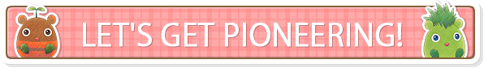

When growing crops and raising livestock, it's important to make sure your fields are ready to handle them. You can use your farm tools to clear up the rocks, trees, and wild grasses scattered around the farm.
- Setting Tools to the Item Bar
-
Whenever you obtain a new tool, it will be placed in a special tool bag. You can find the tool bag at the bottom of the "Bag" menu in the notebook. Tools can then be set to the item bar for use. You can add or take out tools from the tool bag at any time.
Tool List
Whether you're mining, fishing, or simply working the fields, you'll need the right tool for the job.
| Axe | Used to chop down trees and stumps. |
|---|---|
| Sickle | Made to cut down grass. |
| Hammer | Breaks down rocks and flattens crops. |
| Bucket | Used to scoop up water from puddles, ponds, and lakes. |
| Fishing Rod | Can be used by certain bodies of water (rivers, oceans, etc.) to go fishing. |
| Hoe | The staple tool for tilling the field. |
| Watering Can | Used to give your crops the water they need. |
| Camera | Perfect for snapping photos! |
| Leash | Needed to take your pet for a walk. |
- Too Many Items!
-
If your inventory fills up while working the fields, you can place your tools back into the tool bag in order to temporarily create some extra space. As its name implies, the tool bag only has enough space to fit your trusty farm tools, so don't try to stuff anything else in there!
Repeatedly using tools or performing certain activities will slowly build up the gauge for the applicable skill. Once the gauge is filled, you'll level up that particular skill. Higher skill levels enable you to learn new recipes, get higher quality items, use less stamina, and so on. You can check your progress on the "Skills" menu in the notebook.
- How to Upgrade Tools
-
Upgrading your tools will increase their efficiency and make your daily chores much easier, so pay a visit to Clemens at Worker's Base Tool Shop when you can! As long as you've got the materials and money, he'll be happy to give your tools the boost they need.
You can craft new items with the materials you have on hand by selecting the "Craft" menu from the notebook. As long as you have the materials necessary for a recipe, all you have to do is select it and choose how many you'd like to craft. (Makers are the exception, however, and can only be crafted one at a time!)